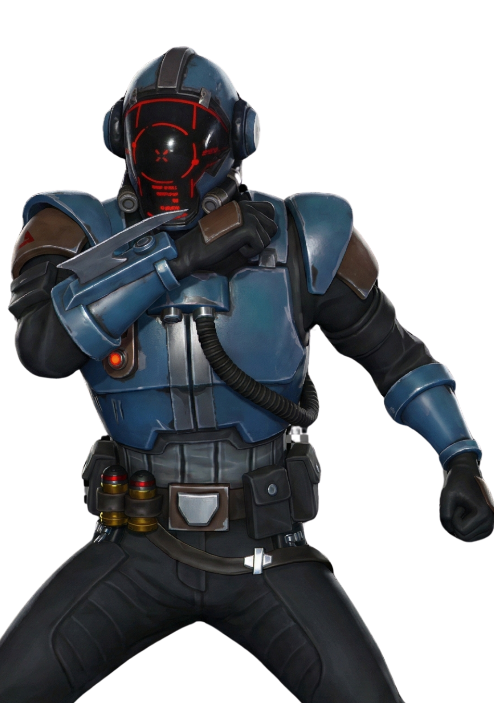
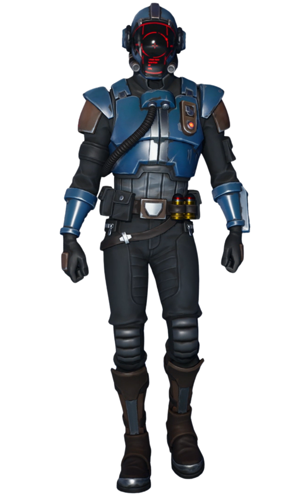

Le Visiteur
// Archives Biographiques
L'Homme du Météore
Arrivé sur Orion dans une capsule dissimulée au cœur d'un météore, Le Visiteur est une énigme vivante. Vêtu d'une exo-armure lourde capable de survivre au vide spatial, il ne parle pas, agissant avec une précision chirurgicale. Son objectif initial semblait incompréhensible, transformant un hangar abandonné en laboratoire de haute technologie en quelques jours seulement.
Membre des Sept
Il porte le même symbole que l'amulette trouvée par Barret, révélant son appartenance à une organisation cosmique : Les Sept. Contrairement à l'Institut Onirique qui cherche à contrôler le Point Zéro, Le Visiteur et ses semblables cherchent à le libérer (ou le détruire, qui sait).
L'Architecte de la Fin
En volant un "convecteur à faille" dans la base de l'Institut, il a finalisé la construction d'une fusée artisanale. Son lancement a déchiré le ciel d'Orion, ouvrant des brèches dimensionnelles pour convoquer le reste des Sept. Ensemble, ils ont guidé un météore colossal droit sur le Point Zéro, provoquant le trou noir qui a englouti l'île tout entière.
// Variantes Visuelles
